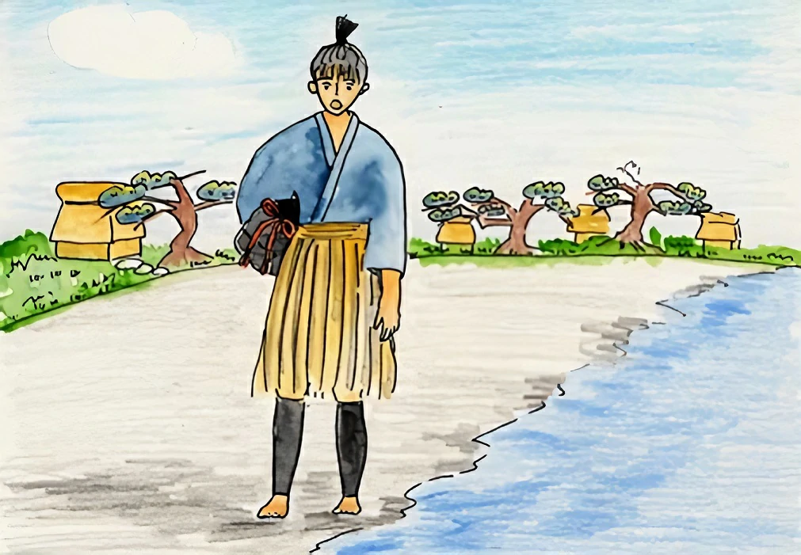

Quando Taro chegou na praia e olhou ao redor, sentiu que algo estava estranho, com toda a certeza aquela era a sua aldeia mas o caminho e as casas estavam diferentes de como ele se lembrava. Taro perguntou para um aldeão que passava "Sabe onde é a casa de Urashima Taro?" E então o aldeão respondeu "Urashima Taro? Não conheço, mas já ouvi que há 100 anos atrás um jovem com este nome saiu para o mar e não retornou.